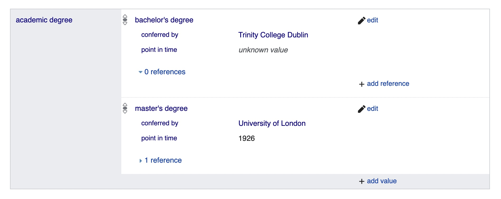

# TODO finishing-up Making a Directory of Women
methods
Turning data back into natural language with some {glue}
How do you turn structured data back into more human-reader-friendly narratives? Here I discuss a semi-automated way of doing it, using the R glue package.
Even though it’s quite specific to the project’s data and needs, it was felt that that some documentation of the technical methods and thought processes might be useful for other projects. I’ve posted an example of full code on the BN R code repository; this post is a small demonstration of the process.
Background
This is a particular kind of use case. It depends on considerable familiarity with the database. Crucially, the input data is already clean, structured and well suited to the task. So there’s no machine learning involved and very few of the tasks would be likely to need it, even if the database were much larger. It’s all fairly straightforward rules-based processing. (Nonetheless, I did find some of the literature on natural language generation helpful for thinking about how to make prose from structured data sources, not least in breaking down the process into its constituent parts, from document content and structure to linguistic structures to word order (eg see Reiter and Dale 1997, Duma and Klein 2013).)
Why would you even want to do this, having gone to all the trouble of creating a structured database? In general, I think it’s important to offer people different ways of accessing complex databases to suit different needs, for example, browsing, keyword searching, more structured searches, and sharing complete datasets.
More specifically, the BN wikibase is very large, complex and detailed, and it’s hard to know where to begin. People need some help to find their way around! So, for example, I made a summary spreadsheet of selected data for project partners at the SAL archives.
I was also asked if it would be possible to make a “Directory” of mini-biographies for all the 900 or so women in the BN database, using selected categories of data. This would form an appendix to the project monograph, but also be useful as a standalone resource. It would offer a different way into the data, an introduction to the fuller ranger of information in the wikibase, and perhaps especially so for less “notable” women who don’t already have online biographies elsewhere.
There are older printed models for this. Some of the BN women appeared in the LSE Register 1895-1932, which crammed remarkable amounts of brutally abbreviated information about LSE students into its pages. For example:
ABRAM, Annie; deceased Oct. 17, 1930. Educ. Univ. of Cambridge (Hist. Tripos); Univ. of Dublin (B.A.); L.S.E. 1905-9, occ. to 1914; D.Sc. (Econ.) 1909.
CHURCHILL, Irene Josephine; b. Dec. 18, 1887. Educ. Oakhurst Sch., Shortlands, Kent; Lady Margaret Hall, Oxford (2nd .Cl. Final Hons., Sch. of Mod. Hist., 1910; D.Phil.1930); L.S.E.1910-9, Cert.’ in Hist. 1913. F.R.Hist.S. 1914. War service: Organising Sec., War Hospital Supply Depot, under D.G.V.O. (War Office),1916-9. Assistant to Dr. Claude Jenkins, Lambeth Librarian, Lambeth Palace, Oct. 1918-June 1929; Assist. Lambeth Librarian, July 1929 to date. Publications. Handbook to Kent Records (Vol. II, Kent Records), 1915; East Kent Records (Vol. VII, ibid.), 1922; Canterbury Administration (S.P.C.K. for Church Hist. Soc.), 2 Vols. Address. Fircroft, 22 Mays Hill Rd., Shortlands, Kent.
We don’t need to apply such ruthless compression of information (one of the goals was to produce something slightly more pleasing to read!) but we do have to be highly selective about what to include.
Challenges
- the complexity and variety of the data
A few variables in the database - for example, a woman’s birth surname - should have only a single value, but many are likely to have multiple values. Virtually all can have none, which can be equally tricky.
For example, Agnes Conway Horsfield held two academic degrees: a bachelor’s degree conferred by Trinity College Dublin (date unknown) and a master’s degree conferred by the University of London in 1926.
This is what they look like in the wikibase:

- (re)shaping pieces of structured data into prose sentences
The Wikibase Query Service returns that information as rectangular data looking something like this.
| person | personLabel | degreeLabel | byLabel | date |
|---|---|---|---|---|
| Q916 | Agnes Conway Horsfield | bachelor’s degree | Trinity College Dublin | _:t91223 |
| Q916 | Agnes Conway Horsfield | master’s degree | University of London | 1926-01-01T00:00:00Z |
And what would I like it to look like?
Agnes Conway Horsfield was awarded a bachelor’s degree by Trinity College Dublin and a master’s degree by the University of London in 1926.
To think through some key changes that are needed:
- restructuring
- the two rows of data need to be collapsed into a single sentence,
- in which the two degrees form elements of a list with appropriate separators (easy when there are only two elements, but more complicated with more than two)
- dates
- the “_:t91223” in the first degree represents a wikibase “unknown value” (a specific data type), so date information needs to be omitted entirely for that element
- the ISO 8601 format timestamp needs to be converted to a year
- knowing that dates can be absent makes sorting the elements of the list a bit more of a problem; for now I’ll keep the original database order and hope that it always makes sense. (In the full version of the code, I’ve added a custom sort order based on the hierarchy of degree qualifications.)
- connecting words
- verbs
- prepositions
- articles (indefinite, definite, none)
A test case: academic degrees
I’ll make a small sample of five women and their academic degrees for testing: Annie Abram, Irene Churchill, Agnes Horsfield, Margaret E.C. Stewart and Kathleen Mary Kenyon. Between them they held ten academic degrees, including undergraduate and postgraduate degrees, from four different institutions.
## load shared libraries, functions etc
source(here::here("_R/shared.R"))
source(here::here("_R/std_queries.R"))[See my post on workflows for background on the general methods for fetching data from the wikibase for processing and analysis.]
## fetch degrees for the sample
degrees_sparql <-
'SELECT distinct ?person ?personLabel ?degreeLabel ?byLabel ?date ?by
WHERE {
VALUES ?person {bnwd:Q916 bnwd:Q709 bnwd:Q536 bnwd:Q317 bnwd:Q3989}
?person bnp:P59 ?s.
?s bnps:P59 ?degree .
optional { ?s bnpq:P61 ?by . }
optional { ?s bnpq:P1 ?date . }
SERVICE wikibase:label {
bd:serviceParam wikibase:language "[AUTO_LANGUAGE],en,en-gb".
}
}'
degrees_query <-
bn_std_query(degrees_sparql) |>
make_bn_ids(c(person, by)) |>
mutate(across(c(date, byLabel), ~na_if(., ""))) |>
make_date_year() |>
select(-date) |>
filter(degreeLabel !="Certificate") |>
arrange(personLabel, year)degrees_query |>
select(-by) |>
kable() |>
kable_styling()| person | personLabel | degreeLabel | byLabel | year |
|---|---|---|---|---|
| Q916 | Agnes Conway Horsfield | bachelor's degree | Trinity College Dublin | 1907 |
| Q916 | Agnes Conway Horsfield | master's degree | University of London | 1926 |
| Q536 | Annie Abram | bachelor's degree | Trinity College Dublin | 1906 |
| Q536 | Annie Abram | doctor of science | University of London | 1909 |
| Q317 | Irene Josephine Churchill | doctor of philosophy | University of Oxford | 1930 |
| Q709 | Kathleen Mary Kenyon | bachelor's degree | University of Oxford | 1928 |
| Q709 | Kathleen Mary Kenyon | master's degree | University of Oxford | 1933 |
| Q709 | Kathleen Mary Kenyon | Doctor of Letters | University of London | 1954 |
| Q3989 | Margaret E. C. Stewart | master's degree | University of Edinburgh | NA |
| Q3989 | Margaret E. C. Stewart | doctor of philosophy | University of Edinburgh | NA |
Glue
What does the glue package do?
Glue offers interpreted string literals that are small, fast, and dependency-free. Glue does this by embedding R expressions in curly braces which are then evaluated and inserted into the argument string.
I’m using three key functions: glue(), glue_collapse() and glue_data().
glue()
First, glue() makes it trivially easy to insert bits of data from a dataframe into a text template. It works well in a dplyr pipeline with mutate().
Data is simply inserted into a text string using {curly braces} (if you need curly braces in the text you can escape them by doubling up {{…}} or you can even tell glue to use a different symbol).
degrees_query |>
mutate(sentence = glue(
"{personLabel} was awarded a {degreeLabel} by {byLabel}."
)) |>
select(sentence) |>
kable() |>
kable_styling()| sentence |
|---|
| Agnes Conway Horsfield was awarded a bachelor's degree by Trinity College Dublin. |
| Agnes Conway Horsfield was awarded a master's degree by University of London. |
| Annie Abram was awarded a bachelor's degree by Trinity College Dublin. |
| Annie Abram was awarded a doctor of science by University of London. |
| Irene Josephine Churchill was awarded a doctor of philosophy by University of Oxford. |
| Kathleen Mary Kenyon was awarded a bachelor's degree by University of Oxford. |
| Kathleen Mary Kenyon was awarded a master's degree by University of Oxford. |
| Kathleen Mary Kenyon was awarded a Doctor of Letters by University of London. |
| Margaret E. C. Stewart was awarded a master's degree by University of Edinburgh. |
| Margaret E. C. Stewart was awarded a doctor of philosophy by University of Edinburgh. |
In practice, I’ll be splitting sentences up into segments that have separate processing; glue can happily combine different bits of data.
degree_verb <- "was awarded"
a <- "a"
degrees_query |>
mutate(glue_by = glue("by {byLabel}")) |>
mutate(sentence = glue(
"{personLabel}",
"{degree_verb}",
"{a}",
"{degreeLabel}",
"{glue_by}.",
.sep = " "
)) |>
select(sentence) |>
kable() |>
kable_styling()| sentence |
|---|
| Agnes Conway Horsfield was awarded a bachelor's degree by Trinity College Dublin. |
| Agnes Conway Horsfield was awarded a master's degree by University of London. |
| Annie Abram was awarded a bachelor's degree by Trinity College Dublin. |
| Annie Abram was awarded a doctor of science by University of London. |
| Irene Josephine Churchill was awarded a doctor of philosophy by University of Oxford. |
| Kathleen Mary Kenyon was awarded a bachelor's degree by University of Oxford. |
| Kathleen Mary Kenyon was awarded a master's degree by University of Oxford. |
| Kathleen Mary Kenyon was awarded a Doctor of Letters by University of London. |
| Margaret E. C. Stewart was awarded a master's degree by University of Edinburgh. |
| Margaret E. C. Stewart was awarded a doctor of philosophy by University of Edinburgh. |
glue_collapse()
Next, glue_collapse() is used to collapse multiple items of data for a person into single statements (in combination with dplyr’s group_by() and summarise() functions). Note how the function can handle the last two elements of a list separately from the rest.
degrees_query |>
group_by(personLabel) |>
summarise(degrees_collapse = glue_collapse(degreeLabel, sep=", ", last = " and ")) |>
ungroup() |>
kable() |>
kable_styling()| personLabel | degrees_collapse |
|---|---|
| Agnes Conway Horsfield | bachelor's degree and master's degree |
| Annie Abram | bachelor's degree and doctor of science |
| Irene Josephine Churchill | doctor of philosophy |
| Kathleen Mary Kenyon | bachelor's degree, master's degree and Doctor of Letters |
| Margaret E. C. Stewart | master's degree and doctor of philosophy |
glue_collapse() can also handle NA (R’s symbol for missing data; when using R it’s important to know that NA is different from a blank field).
degrees_query |>
group_by(personLabel) |>
# na.omit() deals with mixed *NA* and values
summarise(year_collapse = glue_collapse(na.omit(year), sep=", ", last = " and ")) |>
ungroup() |>
kable() |>
kable_styling()| personLabel | year_collapse |
|---|---|
| Agnes Conway Horsfield | 1907 and 1926 |
| Annie Abram | 1906 and 1909 |
| Irene Josephine Churchill | 1930 |
| Kathleen Mary Kenyon | 1928, 1933 and 1954 |
| Margaret E. C. Stewart |
glue_data()
At the very end of the pipeline glue_data() is convenient for printing out the sentences.
degrees_query |>
group_by(personLabel) |>
summarise(degrees_collapse = glue_collapse(degreeLabel, sep=", ", last = " and ")) |>
ungroup() |>
glue_data("{personLabel} {degree_verb} a {degrees_collapse}.")Agnes Conway Horsfield was awarded a bachelor's degree and master's degree.
Annie Abram was awarded a bachelor's degree and doctor of science.
Irene Josephine Churchill was awarded a doctor of philosophy.
Kathleen Mary Kenyon was awarded a bachelor's degree, master's degree and Doctor of Letters.
Margaret E. C. Stewart was awarded a master's degree and doctor of philosophy.Complications
So those are the basic principles. But the transition from data to natural language, even the simple sentences I want here, isn’t quite so easy.
missing data
Unlike glue_collapse(), glue() can’t fix missing data on its own; it’ll print NA as a string “NA”.
degrees_query |>
mutate(degree_info = glue("by {byLabel} in {year}.")) |>
select(degree_info) |>
kable() |>
kable_styling()| degree_info |
|---|
| by Trinity College Dublin in 1907. |
| by University of London in 1926. |
| by Trinity College Dublin in 1906. |
| by University of London in 1909. |
| by University of Oxford in 1930. |
| by University of Oxford in 1928. |
| by University of Oxford in 1933. |
| by University of London in 1954. |
| by University of Edinburgh in NA. |
| by University of Edinburgh in NA. |
And in any case, it isn’t just a matter of dropping the year; the connecting “in” also has to be omitted. (The same thing applies in cases where we don’t know the conferring institution; only the degree label is certain to be present.)
For me, this is most easily handled with a conditional function (if_else() or case_when() for something more than a simple either/or): if the value isn’t NA, use the glue statement, else make it a blank (““).
degrees_query |>
mutate(glue_year = if_else(!is.na(year), glue("in {year}"), "")) |>
select(person, glue_year) |>
kable() |>
kable_styling()| person | glue_year |
|---|---|
| Q916 | in 1907 |
| Q916 | in 1926 |
| Q536 | in 1906 |
| Q536 | in 1909 |
| Q317 | in 1930 |
| Q709 | in 1928 |
| Q709 | in 1933 |
| Q709 | in 1954 |
| Q3989 | |
| Q3989 |
I’ll need this several times, so it makes sense to convert that specific if/else instruction into a more general function which can be used with different prefixes, enabling a more modular approach. The before, between and after arguments allow for adjustment of space (default is to add a space before and in the middle but none after, because that’s what worked best for me here).
## prefix x with a word/phrase, or make the string "" if NA.
## to be used inside a mutate()
prefix_na <- function(x, prefix, before=" ", between=" ", after=""){
if_else(!is.na(x),
glue("{before}{prefix}{between}{x}{after}"),
""
)
}degrees_query |>
mutate(glue_by = prefix_na(byLabel, "by")) |>
mutate(glue_year = prefix_na(year, "in")) |>
glue_data("{personLabel} {degree_verb} a {degreeLabel}{glue_by}{glue_year}.")Agnes Conway Horsfield was awarded a bachelor's degree by Trinity College Dublin in 1907.
Agnes Conway Horsfield was awarded a master's degree by University of London in 1926.
Annie Abram was awarded a bachelor's degree by Trinity College Dublin in 1906.
Annie Abram was awarded a doctor of science by University of London in 1909.
Irene Josephine Churchill was awarded a doctor of philosophy by University of Oxford in 1930.
Kathleen Mary Kenyon was awarded a bachelor's degree by University of Oxford in 1928.
Kathleen Mary Kenyon was awarded a master's degree by University of Oxford in 1933.
Kathleen Mary Kenyon was awarded a Doctor of Letters by University of London in 1954.
Margaret E. C. Stewart was awarded a master's degree by University of Edinburgh.
Margaret E. C. Stewart was awarded a doctor of philosophy by University of Edinburgh.pesky articles
Generally, item labels in the wikibase do not include definite or indefinite articles, which is perfectly proper and sensible in a database context. But it doesn’t work so well when they need to be inserted in prose sentences. There are two main sources of variation that cause problems:
- there are two choices of indefinite article, “a” or “an”, depending on whether the item label starts with a vowel.
- there are also two choices of definite article: some names (eg “Somerville College”) use the zero article
- also, occasionally an item label does already have a definite article
In the case of indefinite articles for the degree labels, both the choice of a/an and the possibility of a/an already being present can be covered with a bit of regex.
prefix_an <- function(x) {
case_when(
# if the string x already starts with the word a/an, don't prefix anything
str_detect(x, "^an?\b") ~ glue("{x}"),
# if it starts with a vowel, prefix with "an";
str_detect(x, "^[AEIOUaeiou]") ~ glue("an {x}"),
# otherwise - as long as it's not *NA* - prefix with "a";
!is.na(x) ~ glue("a {x}"),
# keep anything left behind (should only be NAs) as it is
.default = x
)
}Meanwhile, there are variable conventions in definite article usage for institution names in English. For example:
- “the University of Oxford” but not “the Manchester University”
- “the Courtauld Institute” but not “the Somerville College”
- “the University College of North Wales” but not “the University College London”
I’m not sure how I know these differences, so a computer certainly isn’t going to be able to work them out without some help. If this were a much larger database, I might be thinking about machine learning methods (it could be an opportunity to try out word embeddings). But there are less than 200 different higher education organisations in the database, almost all of which can be covered by three rules, so it’s easier to create a rules-based list.
Whatever method I might ultimately use, it’s helpful to do some modelling to understand something about what the patterns are likely to be in in my data. There are other types of organisation in the database where the conventions are different from (and, well, more conventional than) those of universities and colleges. Learned societies, for example, almost always take the definite article. Commercial organisations could be quite different again.
In this case, I already have a resource within the database that will cover many of the names. I’ve already worked out that names like “Placename University” or “Placename College” use the zero article, and the BN database contains more than 1000 items categorised as places. So I can reuse those. That handles about half the organisations; “the University/College/whatever of X” (definite) and “Name College” (zero) will deal with almost all the rest.
(There are also a few non-English institutions in the database which may want separate treatment - if the text is in English, should it be “La Sorbonne” or “The Sorbonne”? I’m lazy so I’ll take the easier route for now.)
This will want another little function:
# if the `category` is "the" use as prefix; otherwise leave as it is.
# can be adapted further if necessary.
definite_org <- function(x, category){
case_when(
category=="zero" ~ x,
category=="the" ~ prefix_na(x, category, before = ""),
.default = x
)
}First, get all the items in the wikibase that have instance of “locality”.
location_sparql <-
'SELECT distinct ?locationLabel ?location
WHERE {
?location bnwdt:P12 bnwd:Q2147 . # i/o locality
SERVICE wikibase:label {
bd:serviceParam wikibase:language "[AUTO_LANGUAGE],en,en-gb".
}
}'
location_query <-
bn_std_query(location_sparql) |>
make_bn_ids(location) |>
arrange(locationLabel)
location_rgx <-
location_query |>
# filter out a few generics that start [a-z]
filter(str_detect(locationLabel, "^[A-Z]")) |>
# remove some unwanted stuff and then make unique
mutate(locationLabel = str_trim(str_remove(locationLabel, " *\\((district|village|borough|parish|area|county|unitary authority|civil parish|community|region|settlement|city|council area)\\)"))) |>
distinct(locationLabel) |>
# turn them into a regex with a | separator
summarise(rgx = glue_collapse(locationLabel, sep="|")) |>
# final regex:
# must be at the beginning of the name
# \\b at the end to avoid scunthorpes
# add a few placenames that didn't turn up in the database
mutate(rgx = glue("^({rgx}|Chelsea|Clapham|Edmonton|Hampton Court|Harpenden|Harrow|Sheringham|South Kensington|South Tottenham|Welwyn Garden City|Whitechapel|New Cross|North Hackney|Regent Street|Victoria)\\b"))Then get all the instance of “higher education institution”.
# fetch items that are higher education institutions.
hei_sparql <-
'SELECT distinct ?item ?itemLabel
WHERE {
?item bnwdt:P12 bnwd:Q2914 .
SERVICE wikibase:label {
bd:serviceParam wikibase:language "[AUTO_LANGUAGE],en,en-gb".
}
} # /where
ORDER BY ?itemLabel'
hei_query <-
bn_std_query(hei_sparql) |>
make_bn_ids(item)Use the rules I’ve worked out to categorise the names as “the” or “zero”:
hei <-
hei_query |>
# filter out a couple of non-specific items
filter(!item %in% c("Q2485", "Q2916") ) |>
# categorise as "zero" or "the"
mutate(the_label = case_when(
# London is a pain.
str_detect(itemLabel, "^London (Society for|School of)") ~ "the",
# otherwise, if it starts with a placename = zero
str_detect(itemLabel, location_rgx$rgx) ~ "zero",
# "University etc of" = the.
str_detect(itemLabel, "(University|University College|Royal College|School|Institute) of") ~ "the",
# anything else that's (Something) College = zero
str_detect(itemLabel, "College") ~ "zero",
# nearly all the rest = the; this deals with a few exceptions
str_detect(itemLabel, "Greenway Court|Harvard University|^Lady\\b") ~ "zero",
# everything else
.default = "the"
)) |>
mutate(the_label = definite_org(itemLabel, the_label)) A quick look at the first 10 rows seems good.
head(hei, 10) |>
select(-item) |>
kable() |>
kable_styling()| itemLabel | the_label |
|---|---|
| Abergavenny extension centre | Abergavenny extension centre |
| American School of Classical Studies at Athens | the American School of Classical Studies at Athens |
| American School of Prehistoric Research | the American School of Prehistoric Research |
| American University of Beirut | the American University of Beirut |
| Architectural Association | the Architectural Association |
| Armstrong College | Armstrong College |
| Barnard College | Barnard College |
| Barnet Extension Centre | Barnet Extension Centre |
| Barnsley extension centre | Barnsley extension centre |
| Bedford College | Bedford College |
So at last…
degrees_query |>
# add the augmented labels
inner_join(hei |> select(by=item, the_label), by="by") |>
# use the_label instead of the original
mutate(glue_by = prefix_na(the_label, "by")) |>
mutate(glue_year = prefix_na(year, "in")) |>
mutate(glue_degree = glue("a {degreeLabel}{glue_by}{glue_year}")) |>
group_by(personLabel) |>
summarise(degree_collapse =
glue_collapse(glue_degree, ", ", last = " and ")) |>
ungroup() |>
glue_data("{personLabel} was awarded {degree_collapse}.") Agnes Conway Horsfield was awarded a bachelor's degree by Trinity College Dublin in 1907 and a master's degree by the University of London in 1926.
Annie Abram was awarded a bachelor's degree by Trinity College Dublin in 1906 and a doctor of science by the University of London in 1909.
Irene Josephine Churchill was awarded a doctor of philosophy by the University of Oxford in 1930.
Kathleen Mary Kenyon was awarded a bachelor's degree by the University of Oxford in 1928, a master's degree by the University of Oxford in 1933 and a Doctor of Letters by the University of London in 1954.
Margaret E. C. Stewart was awarded a master's degree by the University of Edinburgh and a doctor of philosophy by the University of Edinburgh.Building entries
[Some of the code in this section is not shown in full; see BN R Documentation Github repository for an example of the full code.]
all the women
I want a “starter” list of every woman in the wikibase. This will, among other things, help to create a standard header for each woman.
## get a list of all the women in the wikibase
## with number of statements
bn_starter_list_sparql <-
'SELECT distinct ?person ?personLabel ?statements
WHERE {
?person bnwdt:P3 bnwd:Q3 ; # women
wikibase:statements ?statements .
FILTER NOT EXISTS {?person bnwdt:P4 bnwd:Q12 .}
SERVICE wikibase:label {
bd:serviceParam wikibase:language "[AUTO_LANGUAGE],en,en-gb".
}
}'
bn_starter_list_query <-
bn_std_query(bn_starter_list_sparql) |>
make_bn_ids(person) sorting
I also need to get people sorted in the right order (alphabetically by surname-firstname). This is a little bit tricky because names are not recorded in the format “surname, firstname(s)” anywhere in the wikibase. Women can have quite complex and varied names (titles, middle names, multiple surnames, etc) so that I can’t simply assume the last word in the name will serve for sorting.
Fortunately, there is information about married and birth surnames for a lot of people, which can also be used to include alternative names (“a.k.a.” or “née”) for women who changed their names.
A note: which surname to sort by, if there’s a choice?
The project adopted a contextualised approach to wikibase name labels; so, for example, Jacquetta Hawkes, is not recorded as “Jacquetta Priestley” merely because that was her last husband’s surname. But for sorting purposes I do need to apply some standard rules, so I may not be able to guarantee that the ordering will always reflect the project’s preferences. (All the more reason to include alternative names where possible.)
beginnings…
Each entry will need a heading which includes:
- her full name as recorded in the wikibase
- item number in the wikibase (beginning with “Q”)
- number of “statements” she has in the wikibase
Annie Abram (Q536: 48 statements)
Both the name and Q number should facilitate looking someone up in the wikibase; the statements number is a quick way to give a sense of how much information we have about her.
bn_heading <-
bn_names_list |>
mutate(name_id_statements = glue("{personLabel} ({person}: {statements} statements)\n")) |>
select(name_id_statements, person) |>
mutate(order=0) After the heading, I want a standard introductory sentence for every woman. If we know when a woman was born, the obvious thing to do is start with that information. But we often don’t have it, so alternatives are needed. This went three ways in the end:
- if we have a date of birth: “{personLabel} was born in {year}.”
- if we don’t have a date of birth but do have at least one other kind of date: “{personLabel}’s earliest appearance in BN is dated {year}.”
- a fallback if we don’t have any dates for a person (since it’s a sure bet we know very little about them): “Beyond Notability has recorded little information about {personLabel}.”
bn_first_sentence <-
bn_dates |>
mutate(statement = case_when(
!is.na(year_birth) ~ glue("{personLabel} was born in {year_birth}."),
!is.na(earliest) ~ glue("{personLabel}'s earliest appearance in Beyond Notability's records is dated {earliest}."),
.default = glue("Beyond Notability has recorded little information about {personLabel}.")
)) |>
select(statement, person) |>
# add a column for ordering statements in the final output
mutate(order=1)… middle and endings
Subsequent sentences should begin with “She” rather than repeating the names every time, so this is the final version of the academic degrees statements.
bn_degrees_statements <-
degrees_query |>
# add the augmented labels
inner_join(hei |> select(by=item, the_label), by="by") |>
# use the_label instead of the original
mutate(glue_by = prefix_na(the_label, "by")) |>
mutate(glue_year = prefix_na(year, "in")) |>
mutate(glue_degree = glue("a {degreeLabel}{glue_by}{glue_year}")) |>
group_by(personLabel, person) |>
summarise(degree_collapse =
glue_collapse(glue_degree, ", ", last = " and "), .groups = "drop_last") |>
ungroup() |>
mutate(statement= glue("She was awarded {degree_collapse}.")) |>
select(statement, person) |>
mutate(order=2)A final sentence for date of death, where we have it.
bn_death_statements <-
bn_dates_main_query |>
filter(date_prop=="P15") |>
distinct(person, year) |>
group_by(person) |>
top_n(1, year) |>
ungroup() |>
mutate(statement = glue("She died in {year}.") ) |>
select(statement, person) |>
mutate(order=3)Bringing it all together
The bind_rows() function combines all the separate statements into a single long dataframe.
bn_bind_statements <-
bind_rows(
bn_first_sentence,
bn_degrees_statements,
bn_death_statements
) |>
group_by(person) |>
# ensure statements come out in the order you want them....
arrange(order, .by_group = TRUE) |>
summarise(statements = glue_collapse(statement, sep=" ")) |>
ungroup() |>
# right now I only want the five women in the sample!
semi_join(bn_degrees_statements, by="person")The final output
I’ll use glue_data() at the very end of the pipeline. The “results=‘asis’” option in the R code chunk ensures that Markdown formatting inside any of the glue statements gets rendered when the code is knitted.
The very last step will be to use rmarkdown::render() to “knit” the output to another file (which could be PDF, DOCX or markdown or something else).
bn_heading |>
semi_join(bn_degrees_statements, by="person") |>
left_join(
bn_bind_statements, by="person"
) |>
# with markdown H2 heading and line breaks
glue_data("## {name_id_statements}\n\n{statements}\n\n")Annie Abram (Q536: 56 statements)
Annie Abram was born in 1869. She was awarded a bachelor’s degree by Trinity College Dublin in 1906 and a doctor of science by the University of London in 1909. She died in 1930.
Irene Josephine Churchill (Q317: 34 statements)
Irene Josephine Churchill was born in 1887. She was awarded a doctor of philosophy by the University of Oxford in 1930. She died in 1961.
Agnes Conway Horsfield (Q916: 60 statements)
Agnes Conway Horsfield was born in 1885. She was awarded a bachelor’s degree by Trinity College Dublin in 1907 and a master’s degree by the University of London in 1926. She died in 1950.
Kathleen Mary Kenyon (Q709: 80 statements)
Kathleen Mary Kenyon was born in 1906. She was awarded a bachelor’s degree by the University of Oxford in 1928, a master’s degree by the University of Oxford in 1933 and a Doctor of Letters by the University of London in 1954. She died in 1978.
Margaret E. C. Stewart (Q3989: 19 statements)
Margaret E. C. Stewart was born in 1907. She was awarded a master’s degree by the University of Edinburgh and a doctor of philosophy by the University of Edinburgh. She died in 1986.